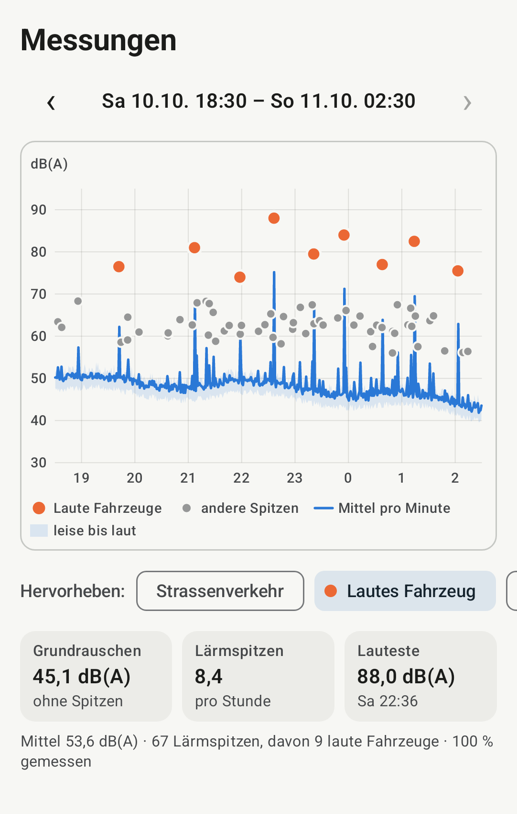

Messen, wo es laut ist
Telefon ans Fenster oder auf den Balkon legen und «Starten» – zu jeder Tageszeit, so lange Sie wollen. Die App hält jeden lauten Töff und jedes laute Auto mit Uhrzeit und Spitzenpegel fest und zeigt die Messung als Grafik.
Unterwegs melden
Ein lauter Töff fährt vorbei? In «Weniger Lärm · Karte» auf «Laut! Melden» tippen, wählen, was laut war, senden. Die Meldung erscheint als Punkt auf der Lärmkarte, ohne Angabe, wer gemeldet hat.
Herunterladen
Weniger Lärm herunterladen Weniger Lärm · Karte herunterladen
Nur für sich messen: «Weniger Lärm», ohne Internet und ohne Standort. Auch zur Lärmkarte beitragen und unterwegs melden: «Weniger Lärm · Karte».
Version 0.6.1, Android 8 oder neuer. Installation, Prüfsummen und der Umstieg von «Stadtlärm» 0.5.x: Anleitung

Lärmkarte
Die gemeinsame Karte zeigt pro Hektare (100 × 100 m), wie laut es in den letzten 7 oder 30 Tagen war, und die Meldungen als Punkte. Zur Lärmkarte
Datenschutz
Die App nimmt nie Ton auf; Pegel und Ereignisse bleiben auf Ihrem Telefon.
Daten verlassen es nur, wenn Sie es wollen: als Export oder mit «Weniger Lärm · Karte», wenn Sie teilen oder melden – an den Server des Projekts in der Schweiz, jederzeit löschbar. Datenschutz im Detail
Verein Weniger Lärm
Hinter der App und der Lärmkarte steht der Verein «Weniger Lärm» mit Sitz in Zürich, gegründet am 10. Oktober 2026. Er setzt sich für weniger vermeidbaren Lärm ein, der wenigen nützt und viele belastet, in der Stadt wie auf dem Land.
Im Vordergrund steht Lärm von Motoren und Maschinen, etwa übermässig laute Fahrzeuge. Musik, Feste und kulturelle Veranstaltungen sind nicht sein Thema. Der Verein ist gemeinnützig und parteipolitisch neutral.
Vorstand: Christian Frank (Präsident) und Cristina Maurer (Finanzen).